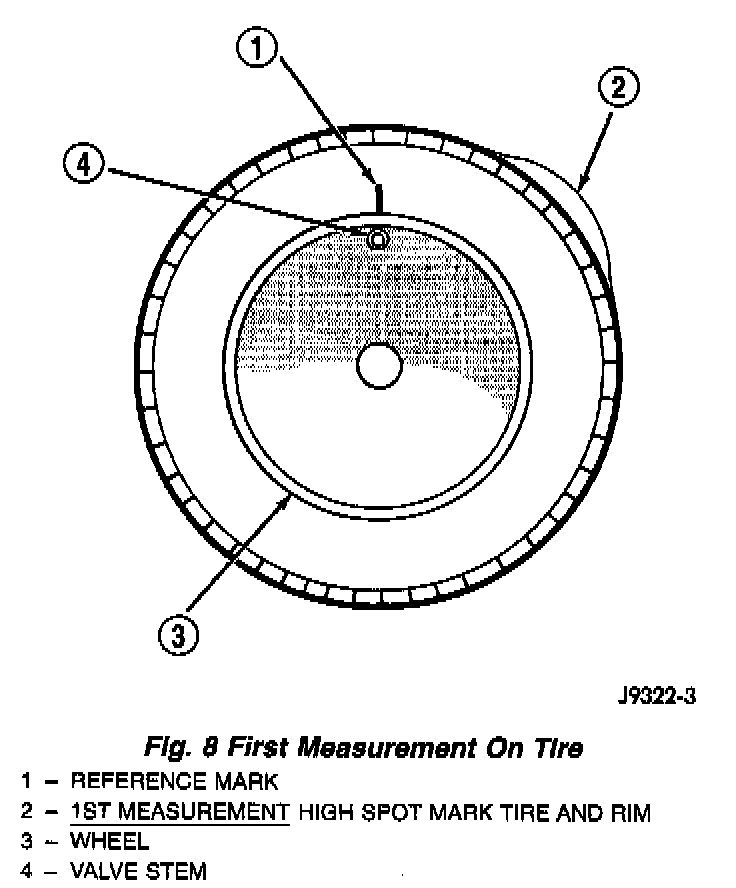
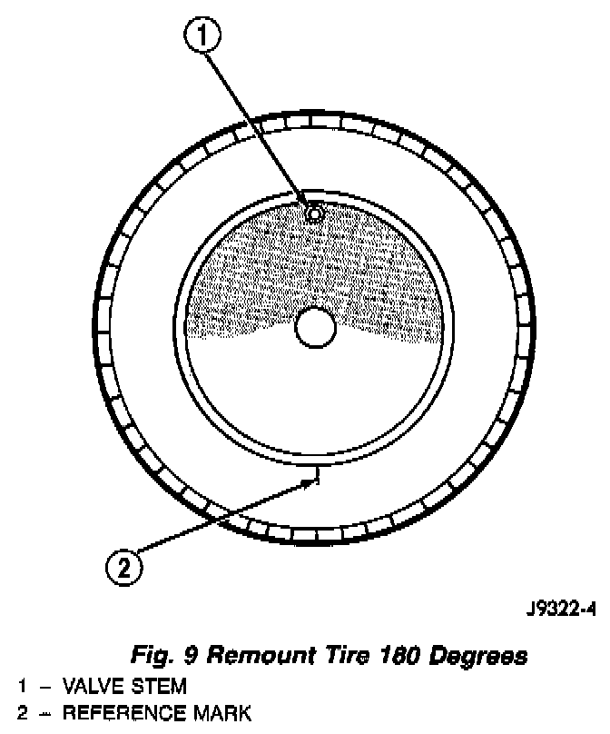
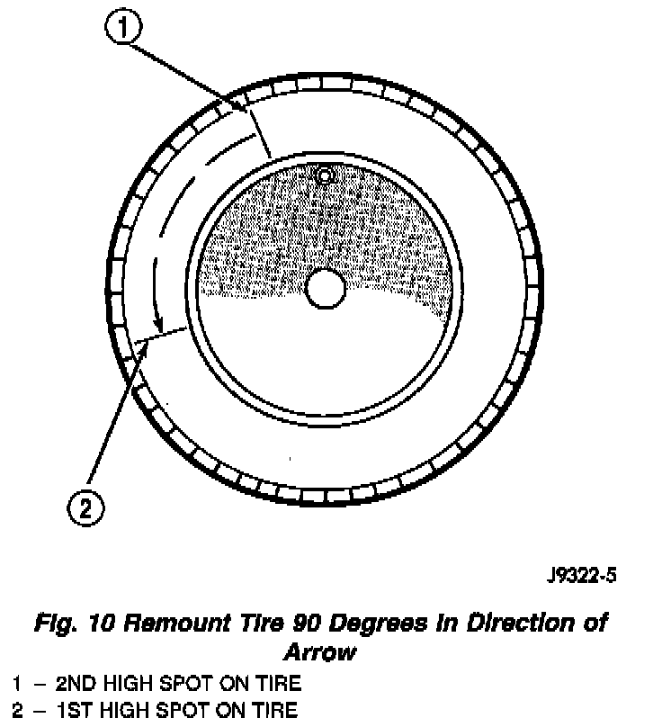

Match Mounting
NOTE: Tires and wheels are currently match mounted at the factory.Match mounting is a technique used to reduce runout in the wheel/tire assembly. This means that the high spot of the tire is matched to the low spot on the wheel rim. This technique is used to reduce run-out in the wheel/tire assembly. The high spot on the tire is marked with a paint mark or a bright colored adhesive label on the outboard sidewall. The low spot on the rim is identified with a label on the outside of the rim and a dot or line on the inside of the rim. If the outside label has been removed the tire will have to be removed to locate the dot or line on the inside of the rim.
Before dismounting a tire from its wheel, a reference mark should be placed on the tire at the valve stem location. This reference will ensure that it is remounted in the original position on the wheel.
Fig. 8:

1. Measure the total indicator runout on the center of the tire tread rib. Record the indicator reading. Mark the tire to indicate the high spot. Place a mark on the tire at the valve stem location.
Fig. 9:

2. Break down the tire and remount it 180 degrees on the rim.
3. Measure the total indicator runout again. Mark the tire to indicate the high spot.
4. If runout is still excessive, the following procedures must be done.
- If the high spot is within 101.6 mm (4.0 inch) of the first spot and is still excessive, replace the tire.
- If the high spot is within 101.6 mm (4.0 inch) of the first spot on the wheel, the wheel may be out of specifications.
Fig. 10:

- If the high spot is NOT within 101.6 mm (4.0 inch) of either high spot, draw an arrow on the tread from second high spot to first. Break down the tire and remount it 90 degrees on rim in that direction. This procedure will normally reduce the runout to an acceptable amount.